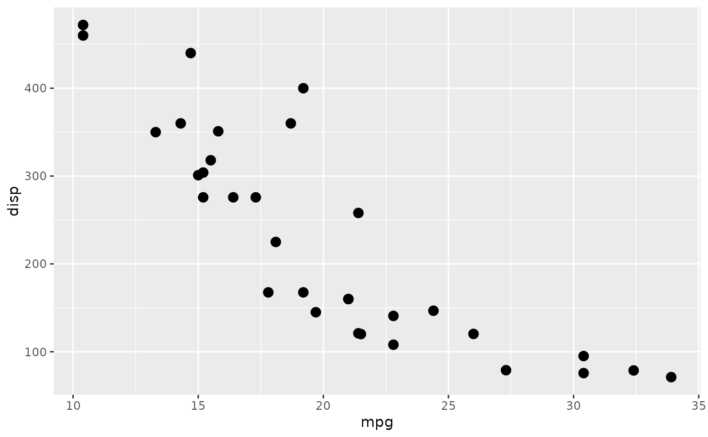

This filter simply converts the given layer, grob, oor ggplot to a raster and
inserts it back again. It is useful for vector graphics devices such as
svglite if a layer contains a huge amount of primitives that would make the
file slow to render. as_reference(x, id) is a shorthand for
with_raster(x, id = id, include = FALSE) that makes the intent of using
this grob or layer as only a filter reference clear.
with_raster(x, ...) as_reference(x, id) # S3 method for grob with_raster(x, ..., id = NULL, include = is.null(id)) # S3 method for Layer with_raster(x, ..., id = NULL, include = is.null(id)) # S3 method for ggplot with_raster(x, ignore_background = TRUE, ...) # S3 method for character with_raster(x, ..., id = NULL, include = is.null(id)) # S3 method for `function` with_raster(x, ..., id = NULL, include = is.null(id)) # S3 method for formula with_raster(x, ..., id = NULL, include = is.null(id)) # S3 method for element with_raster(x, ...) # S3 method for guide with_raster(x, ...)
| x | A ggplot2 layer object, a ggplot, a grob, or a character string naming a filter |
|---|---|
| ... | Arguments to be passed on to methods |
| id | An id that can be used to reference this filter somewhere else |
| include | Should the filter be part of the final render |
| ignore_background | Should the filter be applied to everything except the plot background, or should the background be included. |
A modified Layer object
